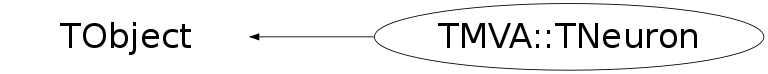

Function Members (Methods)
public:
| virtual | ~TNeuron() |
| void | TObject::AbstractMethod(const char* method) const |
| void | AddPostLink(TMVA::TSynapse* post) |
| void | AddPreLink(TMVA::TSynapse* pre) |
| void | AdjustSynapseWeights() |
| virtual void | TObject::AppendPad(Option_t* option = "") |
| virtual void | TObject::Browse(TBrowser* b) |
| void | CalculateActivationValue() |
| void | CalculateDelta() |
| void | CalculateValue() |
| static TClass* | Class() |
| virtual const char* | TObject::ClassName() const |
| virtual void | TObject::Clear(Option_t* = "") |
| virtual TObject* | TObject::Clone(const char* newname = "") const |
| virtual Int_t | TObject::Compare(const TObject* obj) const |
| virtual void | TObject::Copy(TObject& object) const |
| virtual void | TObject::Delete(Option_t* option = "")MENU |
| void | DeletePreLinks() |
| virtual Int_t | TObject::DistancetoPrimitive(Int_t px, Int_t py) |
| virtual void | TObject::Draw(Option_t* option = "") |
| virtual void | TObject::DrawClass() constMENU |
| virtual TObject* | TObject::DrawClone(Option_t* option = "") constMENU |
| virtual void | TObject::Dump() constMENU |
| virtual void | TObject::Error(const char* method, const char* msgfmt) const |
| virtual void | TObject::Execute(const char* method, const char* params, Int_t* error = 0) |
| virtual void | TObject::Execute(TMethod* method, TObjArray* params, Int_t* error = 0) |
| virtual void | TObject::ExecuteEvent(Int_t event, Int_t px, Int_t py) |
| virtual void | TObject::Fatal(const char* method, const char* msgfmt) const |
| virtual TObject* | TObject::FindObject(const char* name) const |
| virtual TObject* | TObject::FindObject(const TObject* obj) const |
| void | ForceValue(Double_t value) |
| Double_t | GetActivationValue() const |
| Double_t | GetDEDw() const |
| Double_t | GetDelta() const |
| virtual Option_t* | TObject::GetDrawOption() const |
| static Long_t | TObject::GetDtorOnly() |
| virtual const char* | TObject::GetIconName() const |
| virtual const char* | TObject::GetName() const |
| virtual char* | TObject::GetObjectInfo(Int_t px, Int_t py) const |
| static Bool_t | TObject::GetObjectStat() |
| virtual Option_t* | TObject::GetOption() const |
| virtual const char* | TObject::GetTitle() const |
| virtual UInt_t | TObject::GetUniqueID() const |
| Double_t | GetValue() const |
| virtual Bool_t | TObject::HandleTimer(TTimer* timer) |
| virtual ULong_t | TObject::Hash() const |
| virtual void | TObject::Info(const char* method, const char* msgfmt) const |
| virtual Bool_t | TObject::InheritsFrom(const char* classname) const |
| virtual Bool_t | TObject::InheritsFrom(const TClass* cl) const |
| void | InitSynapseDeltas() |
| virtual void | TObject::Inspect() constMENU |
| void | TObject::InvertBit(UInt_t f) |
| virtual TClass* | IsA() const |
| virtual Bool_t | TObject::IsEqual(const TObject* obj) const |
| virtual Bool_t | TObject::IsFolder() const |
| Bool_t | IsInputNeuron() const |
| Bool_t | TObject::IsOnHeap() const |
| Bool_t | IsOutputNeuron() const |
| virtual Bool_t | TObject::IsSortable() const |
| Bool_t | TObject::IsZombie() const |
| virtual void | TObject::ls(Option_t* option = "") const |
| void | TObject::MayNotUse(const char* method) const |
| virtual Bool_t | TObject::Notify() |
| Int_t | NumPostLinks() const |
| Int_t | NumPreLinks() const |
| void | TObject::Obsolete(const char* method, const char* asOfVers, const char* removedFromVers) const |
| static void | TObject::operator delete(void* ptr) |
| static void | TObject::operator delete(void* ptr, void* vp) |
| static void | TObject::operator delete[](void* ptr) |
| static void | TObject::operator delete[](void* ptr, void* vp) |
| void* | TObject::operator new(size_t sz) |
| void* | TObject::operator new(size_t sz, void* vp) |
| void* | TObject::operator new[](size_t sz) |
| void* | TObject::operator new[](size_t sz, void* vp) |
| TMVA::TNeuron& | operator=(const TMVA::TNeuron&) |
| virtual void | TObject::Paint(Option_t* option = "") |
| virtual void | TObject::Pop() |
| TMVA::TSynapse* | PostLinkAt(Int_t index) const |
| TMVA::TSynapse* | PreLinkAt(Int_t index) const |
| virtual void | Print(Option_t* = "") const |
| void | PrintActivationEqn() |
| void | PrintPostLinks() const |
| void | PrintPreLinks() const |
| virtual Int_t | TObject::Read(const char* name) |
| virtual void | TObject::RecursiveRemove(TObject* obj) |
| void | TObject::ResetBit(UInt_t f) |
| virtual void | TObject::SaveAs(const char* filename = "", Option_t* option = "") constMENU |
| virtual void | TObject::SavePrimitive(ostream& out, Option_t* option = "") |
| void | SetActivationEqn(TMVA::TActivation* activation) |
| void | SetBiasNeuron() |
| void | TObject::SetBit(UInt_t f) |
| void | TObject::SetBit(UInt_t f, Bool_t set) |
| void | SetDEDw(Double_t DEDw) |
| virtual void | TObject::SetDrawOption(Option_t* option = "")MENU |
| static void | TObject::SetDtorOnly(void* obj) |
| void | SetError(Double_t error) |
| void | SetInputCalculator(TMVA::TNeuronInput* calculator) |
| void | SetInputNeuron() |
| static void | TObject::SetObjectStat(Bool_t stat) |
| void | SetOutputNeuron() |
| virtual void | TObject::SetUniqueID(UInt_t uid) |
| virtual void | ShowMembers(TMemberInspector& insp) |
| virtual void | Streamer(TBuffer& b) |
| void | StreamerNVirtual(TBuffer& b) |
| virtual void | TObject::SysError(const char* method, const char* msgfmt) const |
| Bool_t | TObject::TestBit(UInt_t f) const |
| Int_t | TObject::TestBits(UInt_t f) const |
| TMVA::TNeuron | TNeuron() |
| TMVA::TNeuron | TNeuron(const TMVA::TNeuron&) |
| void | UpdateSynapsesBatch() |
| void | UpdateSynapsesSequential() |
| virtual void | TObject::UseCurrentStyle() |
| virtual void | TObject::Warning(const char* method, const char* msgfmt) const |
| virtual Int_t | TObject::Write(const char* name = 0, Int_t option = 0, Int_t bufsize = 0) |
| virtual Int_t | TObject::Write(const char* name = 0, Int_t option = 0, Int_t bufsize = 0) const |
protected:
| virtual void | TObject::DoError(int level, const char* location, const char* fmt, va_list va) const |
| void | TObject::MakeZombie() |
private:
| void | DeleteLinksArray(TObjArray*& links) |
| void | InitNeuron() |
| TMVA::MsgLogger& | Log() const |
| void | NullifyLinks(TObjArray*& links) |
| Int_t | NumLinks(TObjArray* links) const |
| void | PrintLinks(TObjArray* links) const |
| void | PrintMessage(TMVA::EMsgType, TString message) |
Data Members
public:
| enum TObject::EStatusBits { | kCanDelete | |
| kMustCleanup | ||
| kObjInCanvas | ||
| kIsReferenced | ||
| kHasUUID | ||
| kCannotPick | ||
| kNoContextMenu | ||
| kInvalidObject | ||
| }; | ||
| enum TObject::[unnamed] { | kIsOnHeap | |
| kNotDeleted | ||
| kZombie | ||
| kBitMask | ||
| kSingleKey | ||
| kOverwrite | ||
| kWriteDelete | ||
| }; |
private:
| TMVA::TActivation* | fActivation | activation equation |
| Double_t | fActivationValue | activation/output value |
| Double_t | fDEDw | sum of all deltas |
| Double_t | fDelta | error field of neuron |
| Double_t | fError | error, only set for output neurons |
| Bool_t | fForcedValue | flag for forced input value |
| TMVA::TNeuronInput* | fInputCalculator | input calculator |
| TObjArray* | fLinksIn | array of input synapses |
| TObjArray* | fLinksOut | array of output synapses |
| Double_t | fValue | input value |
| static TMVA::MsgLogger* | fgLogger | ! message logger, static to save resources |
Class Charts
{kind=link}
{kind=link}
{kind=link}
{kind=link}

Function documentation
void UpdateSynapsesBatch()
update and adjust the pre-synapses for each neuron (input neuron has no pre-synapse) this method should only be called in batch mode
void UpdateSynapsesSequential()
update the pre-synapses for each neuron (input neuron has no pre-synapse) this method should only be called in sequential mode
void AdjustSynapseWeights()
adjust the pre-synapses' weights for each neuron (input neuron has no pre-synapse) this method should only be called in batch mode
void InitSynapseDeltas()
initialize the error fields of all pre-neurons this method should only be called in batch mode
TNeuron()
void NullifyLinks(TObjArray*& links)